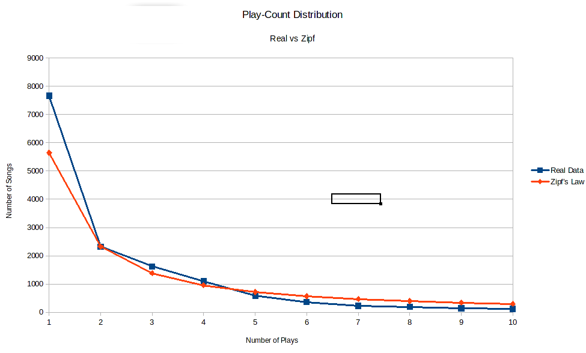
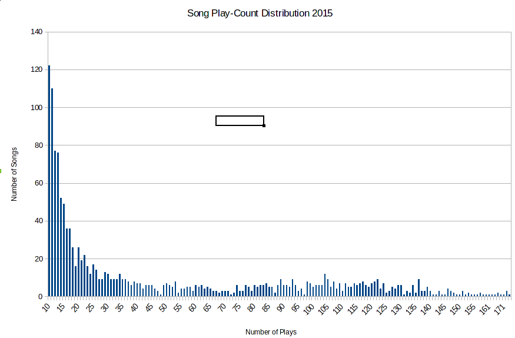

Triple J Play Count Frequency
Today, we were going to look at the correlation between airtime and rankings in 2015, but I got halfway through writing about that and found this article which pretty much says exactly what I was going to say using basically the same data. The short version is that number of plays on the air doesn’t really match up with its ranking.
Why did I say “pretty much the same data”? Triple J publishes every song it plays electronically, so it’s a matter of programming something to gather up all that data and sort it. There is @TripleJPlays on Twitter, but it turns out that the ABC has an even more sophisticated system. If you put in the right web-address, then it will return a big database file with all the information you seek.
However, this database appears to be written by monkeys. What caught my attention was that Mr Barker’s program ranked “Lean On” by Major Lazer and DJ Snake featuring MØ as the 13th most played song of 2015, where as my program had ranked it as 452nd. A fairly significant discrepancy. The difference lies in how we cleaned up the data we got from the ABC, which I’ll say again appears to have been written by monkeys. Digging into it, I found the following (song followed by play count):
- Major Lazer - 29
- Major Lazer & DJ Snake - 5
- Major Lazer & Dj Snake Feat Mo - 1
- Major Lazer & Dj Snake Feat Mø - 2
- Major Lazer and DJ Snake feat. MØ - 1
- Major Lazer x DJ Snake - 119
- Major Major - 1
- Lean On (CRNKN Remix) - Major Lazer - 1
- Lean On (Dillon Francis & Jauz Remix) - Major Lazer - 1
- Lean On (Kream Remix) - Major Lazer - 1
- Lean On ft Mø - Major Lazor and DJ Snake - 1
So here appears to be the source of the discrepancy. The same song is entered under many different names and so my program was not detecting them to be the same song (and arguably the remixes are not the same song, but for the purposes of generating popularity they should be considered so). And actually, backwards engineering Mr Barker’s code I see that his program has accidentally included the song “Lean On” by Carmada (which has 13 plays) while not counting the three remixes or the single play where the title was given as “Lean On ft Mø”.
But all this is besides the point. My program had “Lean On” ranked 452nd with 119 plays, where his had it at 13th with 171 plays. A 40% increase in plays was enough to push it to the top of the play count. This got me thinking about the distribution of song plays on Triple J. First a note on frequency distributions. There’s a rule in linguistics called Zipf’s law, which notes that in a body of writing the most common word will be about twice as common as the next most common word, three times as common as the third most common word and so on. For example, in English, the most common word is “the” which makes up about 7% of written words, compared to “of” with 3.5% and “and” on 2.8%. This pattern is appears in many different contexts with different ratios and is in general called a “power law”. Another example is city populations (though to apply it to Australian cities you have to ignore Melbourne, which is just good life advice really).
Looking at how many songs were played once, twice, etc, we have the following:
- Once - 7665
- Twice - 2325
- Thrice - 1624
- Four Times - 1096
- Five Times - 582
This doesn’t quite fit into Zipf’s law, but it’s close. Remember however that the number of songs that were only played once has been inflated by the monkeys. All those typos end up as single play songs and are included in the 7665. If instead we use the number of songs that were played twice as our starting point, 2325, and go backwards then then number of songs that were played once should be 4650. A third of this is 1550 which is close to 1624 (5% error) and a quarter is 1163 which is close to 1096 (6% error). So indeed it looks like Zipf’s law applies. If we do some more advance maths, we can tweak the parameters a little to get a power law with even closer agreement.

Using this graph, we can read off an estimate of how many typos and misidentifications there are in the data. The theory predicts there should be 5646 songs that were played once (the red dot on the y-axis). In the data, we have 7665 such songs (the blue dot above it). The difference is 2019 songs out of a total of 15600 songs, for an error rate of about 13%. Not great, but acceptable for the sort of work we want to do.
So using a power law we were able to estimate the rate of errors in our sorting of the data. What we were interested in though were the hit songs with over a hundred plays, not the one-offs. This is called the tail of the distribution. For song play-counts in 2015 it looks like this

The tail of a distribution can’t follow a power law. The reason is that would imply there existed an infinite number of songs. To see why, let’s do some maths. Suppose that the most common song occurs \(x\) times. Then Zipf’s law says the second most common song occurs \(x/2\) times, and the third most common occurs \(x/3\) times, and so on. Adding it all up we would have the total \(H\) be
\[ H = x + \frac{x}{2} + \frac{x}{3} + \frac{x}{4} + \ldots = x \Big( 1 + \frac{1}{2} + \frac{1}{3} + \frac{1}{4} + \ldots \Big), \]
where we have factorised \(x\) from every term. We see that the total will be \(x\) times whatever the sum of the fractions in the bracket is. This sum is called the harmonic series, and there is a clever trick for seeing that the total is infinity (just like the sum of 1 + 1 + 1 + 1 … is infinite). I guess I should digress a moment to explain that it is possible to add infinitely many things together but get a finite answer. The simplest example is to start with a square of paper with area 1 sqm. Now cut it in half, so you have two 0.5 sqm rectangles. Take one of those and cut it in half, so you have an 0.5 sqm rectangle and two 0.25 sqm rectangles. Take a small rectangle and, you guessed it, cut it in half. Your inventory is now four rectangles, with areas 0.5, 0.25, 0.125 and 0.125 sqm. Repeat this process infinitely to get infinitely many rectangles of decreasing areas. But they all came from the initial square, so we deduce that
\[ 1 = 0.5 + 0.25 + 0.125 + 0.0625 + \ldots. \]
Anyway, back to calculating the sum of harmonic series. The clever trick is to split up the sum into groups. Have one fraction in the first group, two in the second group, four in the next group, and so on doubling the number of fractions in each group as you go
\[ H = 1 + \frac{1}{2} + \Big( \frac{1}{3} + \frac{1}{4} \Big) + \Big( \frac{1}{5} + \frac{1}{6} + \frac{1}{7} + \frac{1}{8} \Big) + \Big( \frac{1}{9} + \frac{1}{10} + \ldots . \]
The fractions get smaller as you go along. So every fraction in a bracket is bigger than the last fraction in that bracket, which means that
\[ H > 1 + \frac{1}{2} + \Big( \frac{1}{4} + \frac{1}{4} \Big) + \Big( \frac{1}{8} + \frac{1}{8} + \frac{1}{8} + \frac{1}{8} \Big) + \Big( \frac{1}{16} + \frac{1}{16} + \ldots \]
because \(1/3\) is bigger than \(1/4\) and \(1/5\), \(1/6\) and \(1/7\) are all bigger than \(1/8\) and so on. But each bracket on the right adds up to the same thing! Two quarters make a half. So does four eights and eight sixteths. Replacing each bracket with its sum gives
\[ H > 1 + \frac{1}{2} + \frac{1}{2} + \frac{1}{2} + \ldots \]
and this clearly adds up to infinity.
We can’t have the tail of the distribution follow Zipf’s law. To be honest, I don’t think there’s much of a pattern here at all. The distribution of songs getting played more than forty times in a year looks rather flat. If anything, there is a little bump centred around 110 songs. It shows Triple J does quite good job avoiding high rotation songs, which would otherwise show up as a big bump out here.
In fact, in 2015 Florence and Machine took the record for most plays of a song in a day with five. There were 32 songs that got four plays in a day. Which leads naturally to the following measure to finish on. How many days did a song get played three or more times?
- Days with 3 or more plays - Title - Artist - Rank
- 14 - You Were Right - RUFUS - 12
- 13 - Some Minds - Flume - 24
- 13 - Hoops - The Rubens - 1
- 12 - ’Cause I’m A Man - Tame Impala - 61
- 11 - Walk The Wire - Boy & Bear - 63
- 11 - Lay Down - DMA’s - 77
- 10 - What Kind Of Man - Florence And The Machine - 70
- 10 - Too Much Time Together - San Cisco - 49
- 10 - Paranoia - Max Frost - NP
This is a pretty good indicator of songs that are going to make the Hottest 100, but no magic 8-ball at telling the top spots.